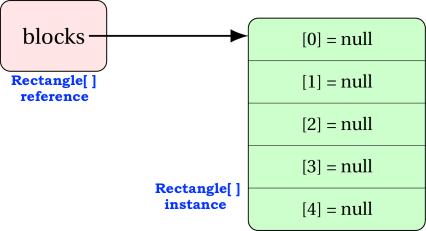
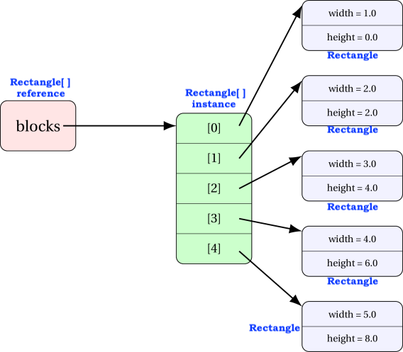

Array of objects
Assumed Knowledge:
Learning Outcomes:
- Creating and operating on an array of objects.
Author: Gaurav Gupta
Array of objects
Class under consideration
We will use the following class for this discussion:
public class Rectangle {
public double width, height;
public Rectangle(double w, double h) {
width = w;
height = h;
}
public String toString() {
return width + " by " + height;
}
}
Creating an array of objects
STEP 1 - Instantiate the array
public class Client {
public static void main(String[] args) {
Rectangle[] blocks = new Rectangle[5];
}
}
You can go through each item of the array and display it.
for(int i=0; i < blocks.length; i++) {
System.out.println(blocks[i]);
}
You’ll get the following output:
null
null
null
null
null
Each item of the array is a Rectangle reference, and initialized to the default value (which, for objects, is null).
The memory diagram for the current state of the array is

Any attempt to access an instance variable or instance method on any of the items of the array will raise a NullPointerException.
blocks[0].width = 5; //NullPointerException
String str = blocks[0].toString(); //NullPointerException
Hence…
STEP 2 - Instantiating each object
for(int i=0; i < blocks.length; i++) {
blocks[i] = new Rectangle(i+1, i*2); //instantiate item at index i
System.out.println(blocks[i]); //display it
}

This time, you will get the following output:
1.0 by 0.0
2.0 by 2.0
3.0 by 4.0
4.0 by 6.0
5.0 by 8.0
Exercise: Creating (filtered) deep copy of an object array
Consider the array source populated as:
Rectangle[] source = new Rectangle[20];
for(int i=0; i < source.length; i++) {
double randWidth = 1 + rand.nextInt(5);
double randHeight = 1 + rand.nextInt(5);
source[i] = new Rectangle(randWidth, randHeight);
}
Create a second array containing Rectangles that have an area of 10 or more.
STEP 1: Count the number of rectangles with area of 10 or more
int count = 0;
for(int i=0; i < source.length; i++) {
if(source[i].area() >= 10) {
count++;
}
}
STEP 2: Create an array of required size
Rectangle[] bigRectangles = new Rectangle[count];
STEP 3: Populate the array
int destIndex = 0;
for(int i=0; i < source.length; i++) {
if(source[i].area() >= 10) {
bigRectangles[destIndex] = source[i];
destIndex++;
}
}
Given an array
dataofRectangleobjects, create an arraywiderwith those rectangles whose width is more than their heightSOLUTION
int count = 0; for(int i=0; i < data.length; i++) { if(data[i].width > data[i].height) { count++; } } Rectangle[] wider = new Rectangle[count]; int destIndex = 0; for(int i=0; i < data.length; i++) { if(data[i].width > data[i].height) { wider[destIndex] = data[i]; destIndex++; } }
You can also access an instance variable or instance method on any of the items of the array.
blocks[0].width = 5; //change the width of the first item to 5
int h = blocks[3].height; //store height of fourth item into h
Complete code is provided in ArrayOfObjects.java